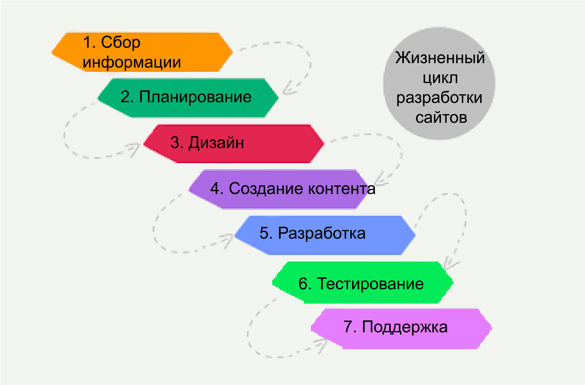

Жизненный цикл сайта
Этап 1
Сбор информации
- Назначение
- Основные цели
- Целевая аудитория
Время: от 1 до 2 недель
Этап 2
Планирование:
- Создание карты сайта
- Планирование макета
На этой стадии заказчик уже может получить представление о будущем сайте. SiteMap. По этой карте сайта можно определить вид главной страницы и других страниц
Макет представляет из себя визуальное представление будущего интерфейса сайта. Не содержит элементов дизайна. Описывает расположенные данные элементов. Для реализации Mockup используются онлайн сервисы.
Этап 3
Дизайн, шаблон страницы, обзор и утверждение
Близок к его окончательной форме. Визуальный контент создается на данном этапе. После создания, шаблон отправляется заказчику.
Этап 4
Создание контента
Заказчик уже предоставляет контент к тому, чтобы быть размещенным на сайте. До или во время стадии разработки.
Этап 5
Верстка и разработка
Создается домашняя страница, а затем все остальные. Устанавливается CMS. Немалая задача проведение SEO-оптимизации(Поисковая оптимизация). Валидность кода.
Этап 6
Тестирование и запуск
Самая рутинна часть. Проверка кодов, орфографии. Ещё нужен тест для проверки того, что во время загрузки не произошло ошибок и все файлы целы
Этап 7
Поддержка:
- Отзывы
- Регулярные обновления
ВАЖНО!
Веб-сайт это сервис, а не продукт. Нужно при необходимости быстро вносить изменения. Обновления CMS (Это система управления контентом, набор скриптов для создания, редактирования и управления контентом сайта)